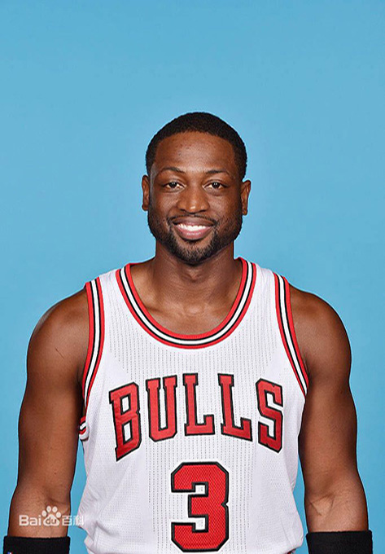
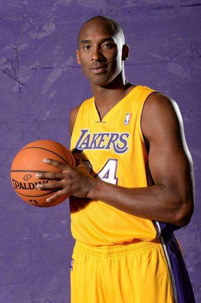

迈克尔·乔丹（Michael Jordan），1963年2月17日生于纽约布鲁克林，前美国职业篮球运动员，司职得分后卫，历史上最伟大的篮球运动员。
1984年的NBA选秀大会，乔丹在首轮第3顺位被芝加哥公牛队选中。[1] 1986-87赛季，乔丹场均得到37.1分，首次获得分王称号。[1] 1990-91赛季，乔丹连夺常规赛MVP和总决赛MVP称号，率领芝加哥公牛首次夺得NBA总冠军。[1] 1997-98赛季，乔丹获得个人职业生涯第10个得分王，并率领公牛队第六次夺得总冠军。[1] 在19年的职业生涯中，乔丹两次宣布退役（1993年以及1998年），并于2003年4月16日正式退役[1] 。
2009年9月11日，迈克尔·乔丹正式入选NBA篮球名人堂。
...显示全部

德怀恩·韦德（Dwyane Wade），1982年1月17日出生于美国芝加哥，美国职业篮球运动员，司职得分后卫，效力于芝加哥公牛队[1] ，绰号“闪电侠”（The Flash）。
德怀恩·韦德在2003年选秀大会上于首轮第五顺位被迈阿密热火队选中，从而进入NBA。2006年，韦德获得了生涯第一座NBA总冠军，并且成为NBA历史上第五年轻获得总决赛MVP的球员（FMVP）。2008年，韦德代表美国男篮获得北京奥运会金牌。2011-14年间，韦德帮助热火队四次进入NBA总决赛，并在中间两个赛季取得连冠。
韦德擅长欧洲步，突破犀利，喜欢背身单打，年轻时是NBA联盟中运球过人速度最快的球员之一。
2016年7月7日，德怀恩·韦德离开效力13年的迈阿密热火队，正式加盟芝加哥公牛队。[1]
...显示全部

科比·布莱恩特（Kobe Bryant），1978年8月23日出生于美国宾夕法尼亚州费城，前美国职业篮球运动员，司职得分后卫/小前锋（锋卫摇摆人），整个NBA生涯（1996年-2016年）一直效力于NBA洛杉矶湖人队，是前美国职业篮球运动员乔·布莱恩特的儿子。
科比是NBA最好的得分手之一，突破、投篮、罚球、三分球他都驾轻就熟，几乎没有进攻盲区，单场比赛81分的个人纪录就有力地证明了这一点。除了疯狂的得分外，科比的组织能力也很出众，经常担任球队进攻的第一发起人。另外科比还是联盟中最好的防守人之一，贴身防守非常具有压迫性。
2016年4月14日，在结束了生涯最后一场主场对阵爵士的常规赛之后，科比·布莱恩特正式宣布退役。
...显示全部